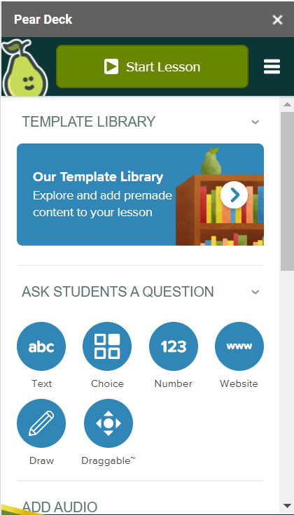

Introducing Pear Deck
Give It A Try
Set Up an Account
Keep Account Secure
Add-On
Dashboard
Engaging Students
Feedback
Menu
Investigate the links to learn more about the Pear Deck Add-On for Google Slides Dashboard
